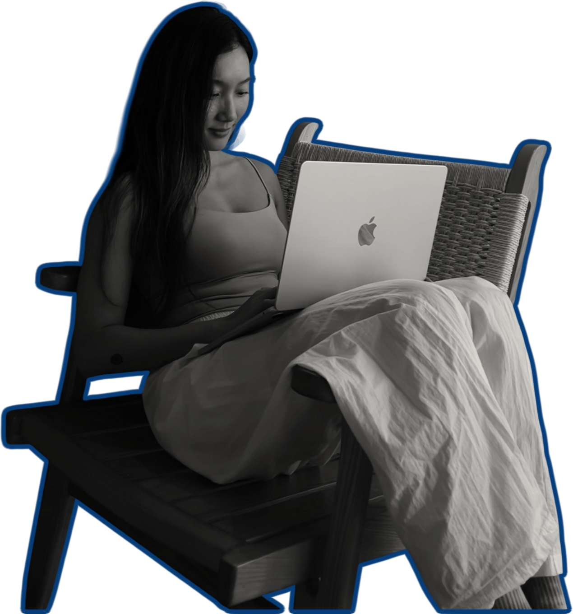
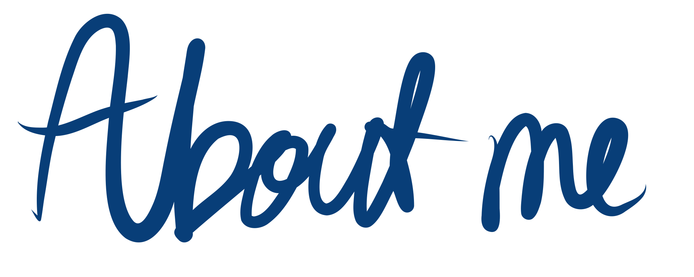
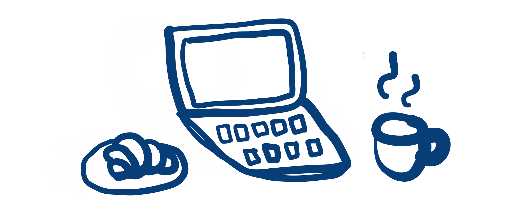
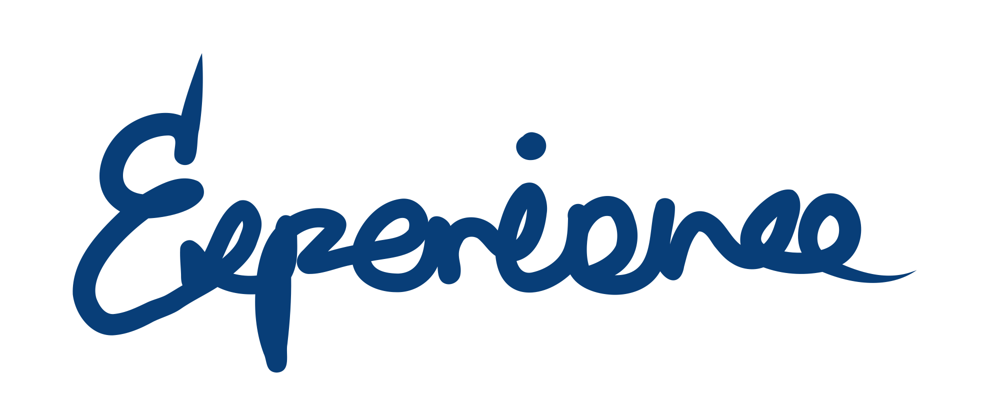
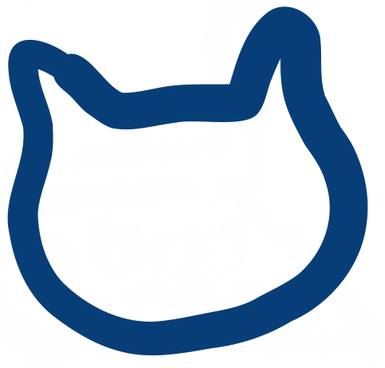
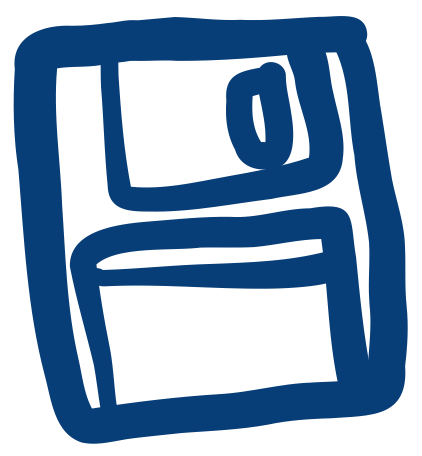

Wrdlift
I built Wrdlift for myself. After a decade of speaking English, progress slows once you can communicate clearly. It sits in your journal and points out spots where you could say things differently.

This girl always dreamed travelling and living abroad. She grew up to
became an interior designer in Australia, living apart from her family
for a decade she never thought possible. Now she's imagining again.
This time, as a software developer. She used to design for people
affecting their lives through something as simple as color, or as
practical as the distance from point A to point B. Now she designs
virtually, the same intention, but less specific and wider reach.
Do you want to hear more about her?

I built Wrdlift for myself. After a decade of speaking English, progress slows once you can communicate clearly. It sits in your journal and points out spots where you could say things differently.
a smart to-do app where your tasks grow as fruits on a tree. Type in natural language, let AI categorize your day, and pluck the fruits when done.


an AI-powered tarot reading app that talks with you rather than at you. It asks follow-up questions, listens to your answers, and gives you a reading that fits your situation.
Minimal Pomodoro timer with ambient video backgrounds.


Drop PDFs into labeled folders and export a structured ZIP for your accountant. No backend, no accounts - runs entirely client-side.





github.com/heyyyjisu
Download Resume in PDF